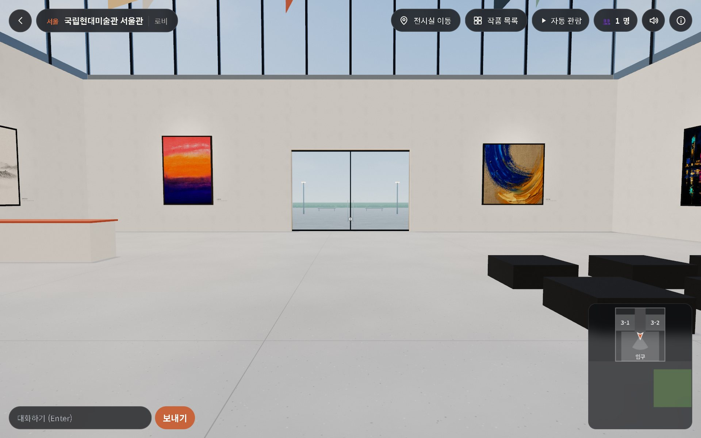
TEACHER'S MANUAL
학생 작품
3D 온라인 전시관
선생님용 매뉴얼 — 가입·설치 없이 10분 만에 만들기
만들기 화면 · https://parkdongbae.github.io/school-3d-artcenter/?make
준비물 · 구글 계정 하나, 인터넷이 되는 컴퓨터 (크롬 권장)
한눈에 보기
구글 설문지로 학생 작품 사진을 모으면, 3D 미술관에 학급별로 자동으로 걸립니다. 선생님이 할 일은 세 가지뿐입니다.
1
설문지 준비
사본 만들기 → 시트 연결 → 공유 (5분)
2
시트 주소 붙여넣기
붙여넣고 "연결 확인" (1분)
3
전시관 주소 만들기
전시 제목을 적고 버튼 한 번 (2분)
완성된 전시관의 로비. 지역 대표 미술관 12곳의 건축을 닮은 전시관 중에서 골라 관람합니다.
이런 것이 필요 없습니다
- GitHub·Vercel 같은 사이트 가입, 프로그램 설치, 코딩, 비밀번호·접근 키
이 매뉴얼의 순서
| 3~6쪽 | 전시관 만들기 (1 → 2 → 3단계) | 10쪽 | 자동 관람 · TV에 틀어 두기 |
|---|
| 7쪽 | 시험해 보고 학생에게 알리기 | 11쪽 | 작품 크게 보기 · 관리 메뉴(F9) |
|---|
| 8~9쪽 | 관람하기 · 아바타로 함께 관람 · 대화 | 12~13쪽 | 전시 중·후 할 일 · 문제 해결 · 개인정보 |
|---|
1단계구글 설문지 준비 ①
먼저 구글에 로그인한 뒤, 만들기 화면(…/school-3d-artcenter/?make)을 엽니다.
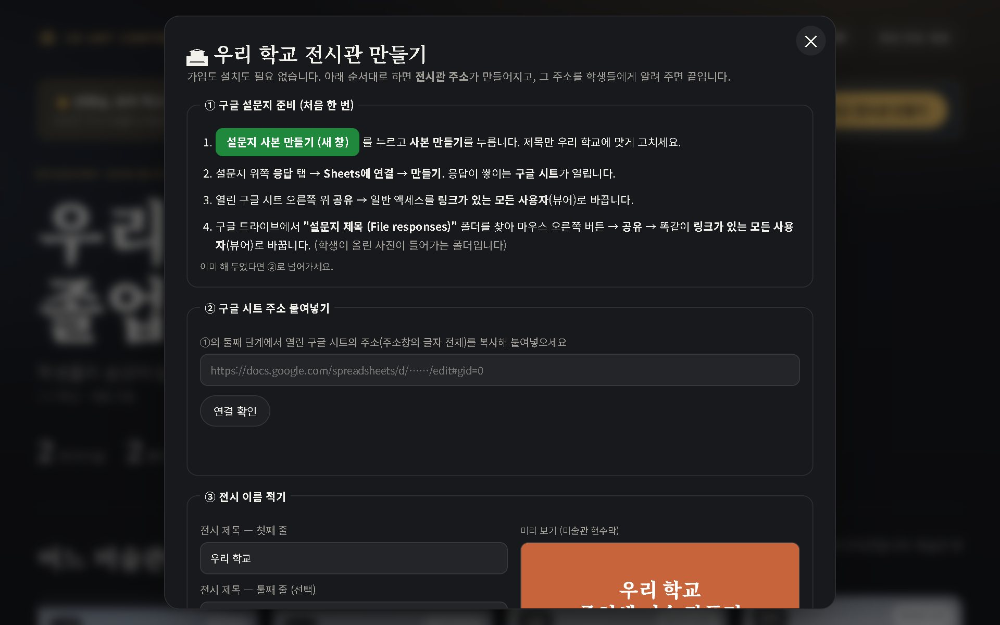
만들기 화면. 필요한 버튼과 순서가 이 화면 안에 모두 들어 있습니다.
- 초록색 설문지 사본 만들기 (새 창) 을 누르고, 나오는 화면에서 사본 만들기 를 누릅니다.
→ 질문이 모두 들어 있는 설문지가 내 구글 드라이브에 생깁니다.
- 설문지 맨 위 제목만 우리 학교에 맞게 고칩니다. 예) ○○중학교 미술 작품 제출
질문의 순서와 개수는 바꾸지 마세요. 전시관은 "학번 → 성명 → 작품1 제목 → 내용 → 이미지 → 작품2 …" 순서로 읽습니다. 순서가 바뀌면 작품이 엉뚱하게 걸립니다.
- 설문지 위쪽 응답 탭 → Sheets에 연결 → 만들기 를 누릅니다.
→ 응답이 쌓이는 구글 시트가 새 탭으로 열립니다. 이 탭은 닫지 마세요.
(그림) 설문지의 응답 탭 — 빨간 테두리의 버튼을 누릅니다. 구글 화면은 조금씩 바뀔 수 있습니다.
1단계구글 설문지 준비 ② — 공유 두 곳
전시관이 작품을 읽을 수 있도록 시트와 사진 폴더 두 곳을 "링크가 있는 모든 사용자"로 바꿉니다. 가장 많이 빠뜨리는 부분입니다.
ⓐ 구글 시트 공유
- 방금 열린 구글 시트 오른쪽 위 공유 를 누릅니다.
- "일반 액세스"의 제한됨을 눌러 링크가 있는 모든 사용자로 바꿉니다.
- 역할은 뷰어 그대로 두고 완료.
"○○중학교 미술 작품 제출(응답)" 공유
일반 액세스링크가 있는 모든 사용자 ▾뷰어 ▾
완료
(그림) 공유 창
ⓑ 사진 폴더 공유
- drive.google.com 을 엽니다.
- "설문지 제목 (File responses)" 폴더를 찾아 마우스 오른쪽 버튼 → 공유 → 공유.
- 똑같이 링크가 있는 모든 사용자 · 뷰어로 바꾸고 완료.
내 드라이브
📁 ○○중학교 미술 작품 제출 (File responses)오른쪽 버튼 → 공유 → 공유
(그림) 학생이 올린 사진이 들어가는 폴더
사진 폴더는 학생이 사진을 처음 올릴 때 만들어지기도 합니다. 폴더가 안 보이면 7쪽의 시험 제출을 먼저 한 번 한 뒤 다시 찾아보세요.
ⓒ 설문지 설정 (권장)
- 설문지 설정 → 응답 → 응답 수정 허용을 켭니다. 학생이 나중에 작품을 고칠 수 있습니다.
- 파일 올리기 질문 때문에 학생은 구글 계정으로 로그인해야 제출할 수 있습니다. (구글 설문지의 규칙입니다)
여기까지 하면 준비 끝. 한 번 해 두면 다음 전시 때는 설문지만 새로 복사해 같은 방법으로 쓰면 됩니다.
2단계구글 시트 주소 붙여넣기
- 구글 시트 탭으로 가서, 맨 위 주소창의 글자를 전부 복사합니다. (주소창 클릭 → Ctrl+C)
https://docs.google.com/spreadsheets/d/1AbCdEf…………/edit?resourcekey#gid=0
(그림) 구글 시트의 주소창 — 처음부터 끝까지 모두 복사합니다.
- 만들기 화면의 ② 구글 시트 주소 붙여넣기 칸에 붙여넣고(Ctrl+V) 연결 확인 을 누릅니다.
- 초록색 ✅ 연결되었습니다 가 나오면 성공입니다. 사진이 있으면 ✅ 작품 사진도 잘 보입니다 도 함께 나옵니다.
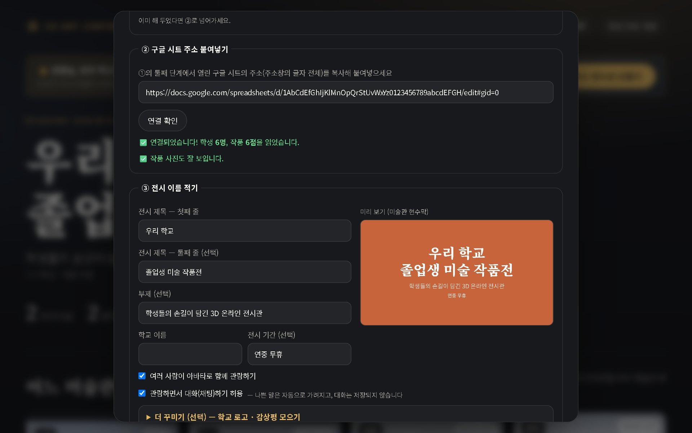
연결에 성공한 화면. 읽어 온 학생 수와 작품 수가 보입니다.
빨간 글씨가 나오면
| "시트를 읽지 못했습니다" | 4쪽 ⓐ 시트 공유를 다시 확인합니다. |
|---|
| "설문지 주소가 아니라…" | 설문지가 아니라 구글 시트 탭의 주소를 복사해야 합니다. |
|---|
| "작품 사진이 보이지 않습니다" | 4쪽 ⓑ 사진 폴더 공유를 다시 확인합니다. |
|---|
| "아직 응답이 없어요" | 정상입니다. 그대로 3단계로 넘어가도 됩니다. |
|---|
3단계전시 이름 적고 주소 만들기
- 전시 제목 첫째 줄(필수)·둘째 줄·학교 이름을 적습니다. 오른쪽 현수막 미리 보기가 바로 바뀝니다.
- 두 가지를 정합니다. (처음에는 둘 다 켜져 있습니다)
- 여러 사람이 아바타로 함께 관람하기 — 같은 미술관에 있는 사람끼리 서로 보입니다.
- 관람하면서 대화(채팅)하기 허용 — 수업 중 장난이 걱정되면 이것만 끕니다.
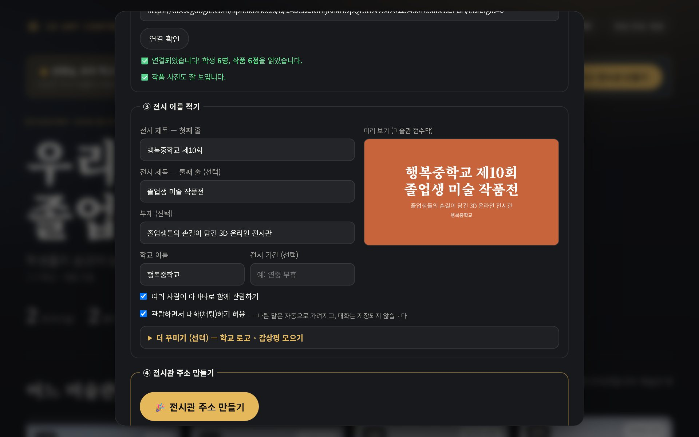
- 노란색 🎉 전시관 주소 만들기 를 누릅니다.
- 주소 복사 를 눌러 한글·메모장에 붙여넣어 보관하고, QR 코드 그림 저장도 눌러 둡니다.
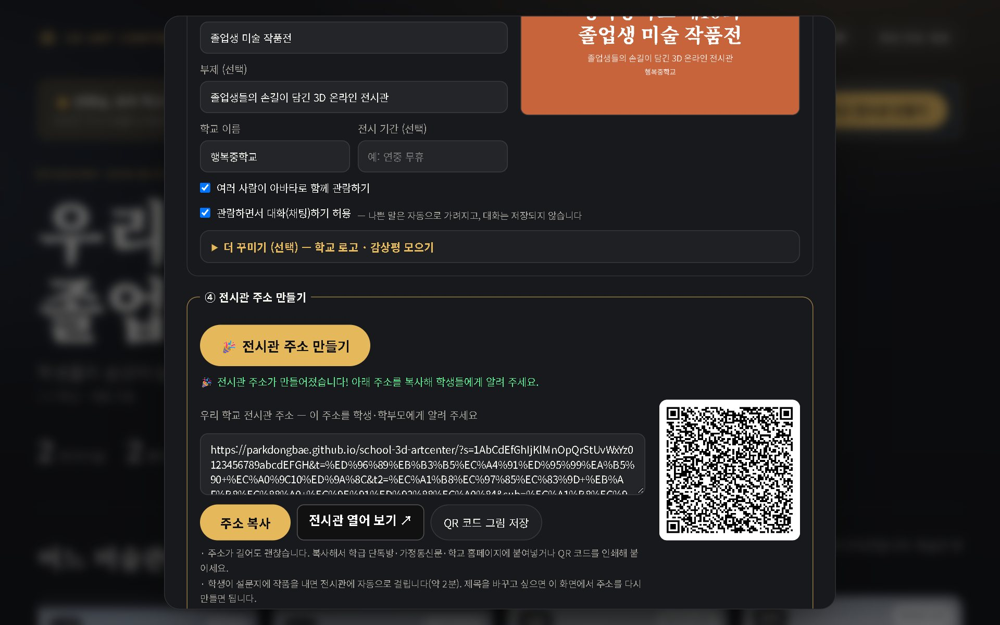
만들어진 전시관 주소와 QR 코드. 이 주소가 곧 우리 학교 전시관입니다.
주소가 길어도 괜찮습니다. 복사·붙여넣기 하거나 QR 코드를 쓰면 됩니다. 제목을 바꾸고 싶으면 이 화면에서 다시 적고 주소를 새로 만들어 알려 주면 됩니다.
시험해 보고 학생에게 알리기
먼저 선생님이 시험 제출
- 설문지 오른쪽 위 보내기(또는 게시) → 🔗 링크를 복사합니다. 이것이 작품 내는 곳입니다.
- 그 링크로 들어가 학번 3101, 이름, 작품 제목, 그림 한 장으로 제출해 봅니다.
- 2분쯤 뒤 전시관 주소를 새로고침(F5)하면 시험 작품이 걸려 있습니다.
- 시험 작품은 구글 시트에서 그 줄을 지우면 전시관에서도 사라집니다.
전시관 주소로 연 첫 화면. 우리 학교 전시 제목과 전시실·작가·작품 수가 보입니다.
학생에게 알려 줄 두 가지
| ① 설문지 링크 | 작품을 내는 곳 |
|---|
| ② 전시관 주소 (또는 QR) | 작품을 구경하는 곳 |
|---|
학번 쓰는 법 (전시실이 정해집니다)
| 4자리 | 3305 → 3학년 3반 5번 → "3학년 3반" 전시실 |
|---|
| 5자리 | 31205 → 3학년 12반 5번 → "3학년 12반" 전시실 |
|---|
| 그 밖 | "특별 전시실"에 걸립니다. (교사 작품, 동아리 작품 등에 쓸 수 있습니다) |
|---|
학생에게 나눠 줄 안내문은 저장소의 docs/학생-제출-안내문.md 에 있습니다. 대괄호 부분만 고쳐 쓰세요.
관람하기
첫 화면에서 미술관을 하나 고르면 미술관 앞 광장에서 시작합니다. 열두 곳 모두 같은 작품이 걸려 있고, 건물 모습만 다릅니다.
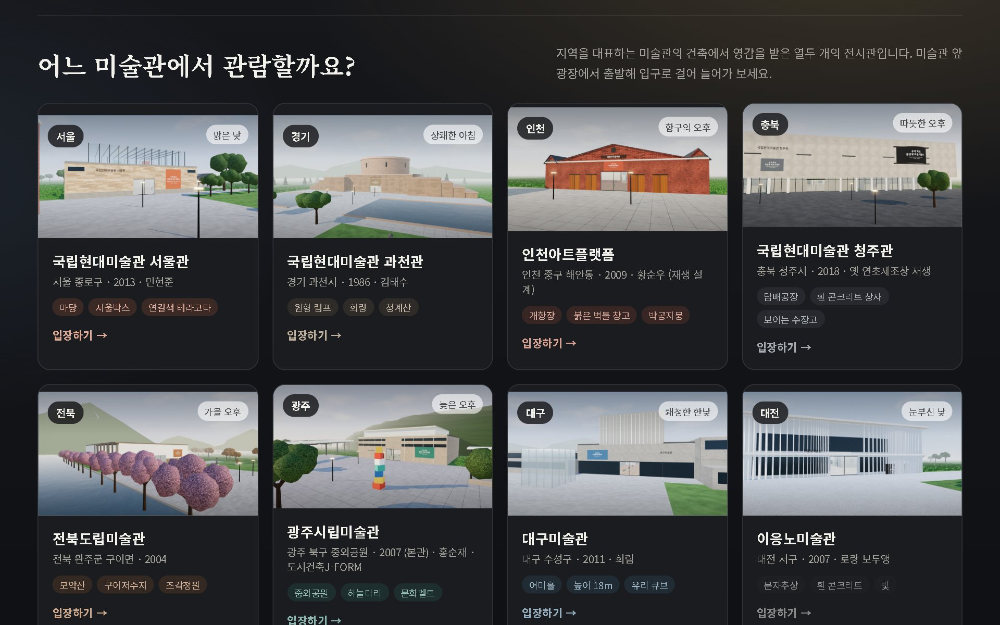
미술관 고르기 — 서울·경기·인천·충북·전북·광주·대구·대전·경남·부산·강원·제주
움직이는 방법
| 컴퓨터 | WASD 또는 방향키로 걷기 · 마우스를 끌어 둘러보기 · 바닥을 누르면 그곳으로 걸어감 · Shift 빨리 걷기 |
|---|
| 휴대폰·태블릿 | 왼쪽 아래 조이스틱으로 걷기 · 화면을 밀어 둘러보기 |
|---|
화면 위쪽 버튼
| 전시실 이동 | 우리 반 전시실로 바로 가기 |
|---|
| 작품 목록 | 이름·제목으로 찾아 그 작품 앞으로 가기 |
|---|
| ▶ 자동 관람 | 알아서 돌아다니며 감상 (10쪽) |
|---|
| 👥 숫자 | 지금 함께 있는 사람 수 · 이름과 아바타 바꾸기 |
|---|
| ⓘ | 미술관 소개 · 조작법 · 화질 고르기 |
|---|
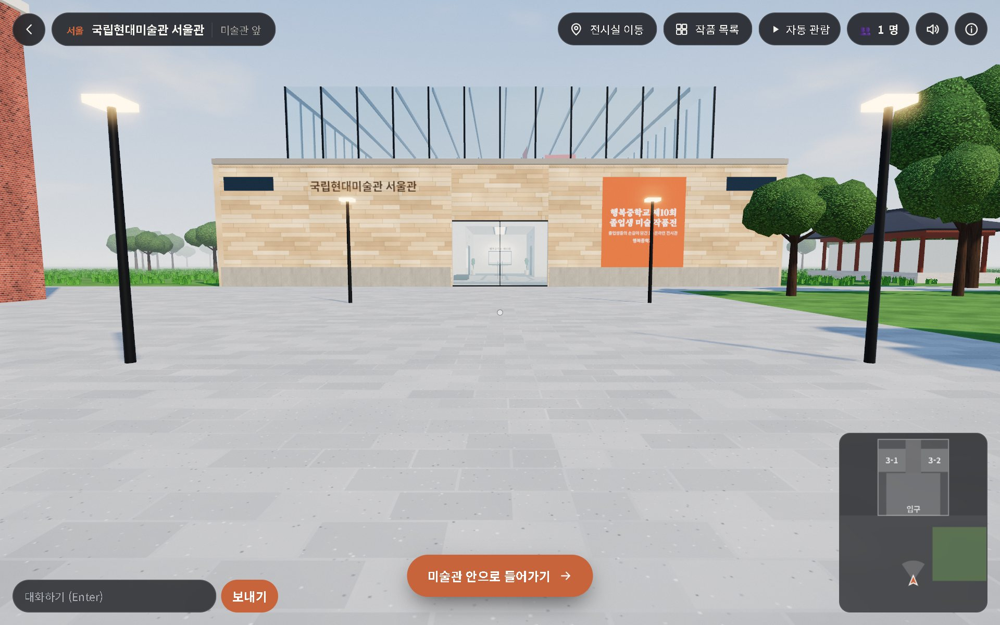
미술관 앞. 미술관 안으로 들어가기를 누르면 입구까지 걸어갑니다.
오른쪽 아래 미니 지도는 위쪽이 미술관 안쪽입니다. 지도의 전시실을 누르면 그곳으로 갑니다.
아바타로 함께 관람 · 대화
미술관에 처음 들어가면 이름과 아바타를 고릅니다. 같은 전시의 같은 미술관에 있는 사람끼리 서로 보이고 이야기할 수 있습니다.
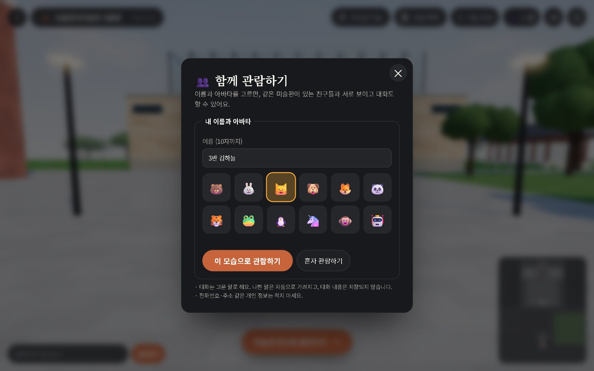
이름(10자까지)과 아바타 12가지 중 하나를 고릅니다.
- 이 모습으로 관람하기 — 다른 사람에게 내 아바타와 이름표가 보입니다.
- 혼자 관람하기 — 연결하지 않고 혼자 봅니다.
- 나중에 바꾸려면 화면 위 👥 버튼을 누릅니다.
수업 시간에는 "모두 서울관으로 들어오세요"처럼 미술관을 하나 정해 주면 다 같이 만날 수 있습니다.
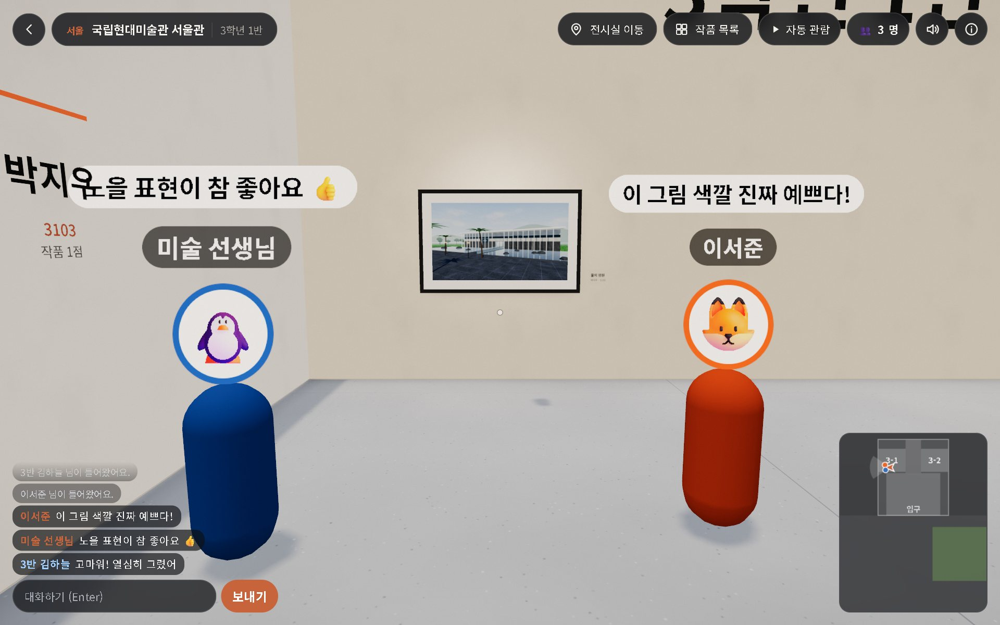
친구들의 아바타와 말풍선. 화면 왼쪽 아래 칸에 글을 쓰고 보내기(컴퓨터는 Enter)를 누릅니다.
대화의 안전 장치
- 나쁜 말은 보낼 수 없고, 받은 쪽에서도 자동으로 가려집니다. 연달아 보내기(도배)도 막습니다.
- 대화는 어디에도 저장되지 않습니다. 화면을 닫으면 사라집니다.
- 전시관 주소를 아는 사람은 누구나 들어올 수 있습니다. 주소를 학교 밖에 공개할 때는 6쪽의 대화하기 허용을 끄고 주소를 만드세요.
자동 관람 · TV에 틀어 두기
화면 위 ▶ 자동 관람 을 누르면, 미술관으로 걸어 들어가 작품을 무작위로 골라 하나씩 보여 줍니다.
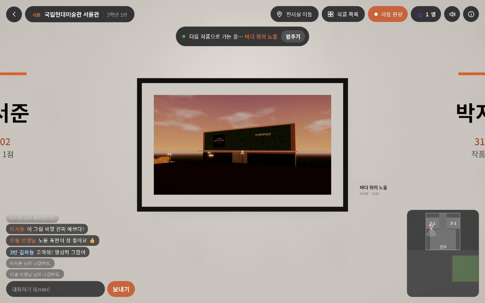
자동 관람 중. 위쪽 막대에 지금 보는 작품의 제목·이름·반이 나옵니다.
- 한 작품을 약 7초 본 뒤 다음 작품으로 걸어갑니다. 다른 반 전시실로는 장면이 바뀌며 넘어갑니다.
- 키보드·마우스·조이스틱으로 직접 움직이면 바로 꺼집니다. 멈추기를 눌러도 됩니다.
- 작품을 다 보면 처음부터 다시 돕니다.
복도 TV · 전자 칠판에 계속 틀어 두기
전시관 주소 맨 끝에 아래 글자를 붙여서 열면, 열자마자 자동 관람을 시작합니다.
&auto=1#seoul
| seoul 자리에 | gwacheon · incheon · cheongju · jeonbuk · gwangju · daegu · daejeon · gyeongnam · busan · san · jeju 를 쓰면 다른 미술관에서 시작합니다. |
|---|
| 소리 | 배경음악은 화면을 한 번 누르면 켜집니다. 끄려면 🔊 버튼(또는 M). |
|---|
| 화면이 꺼지지 않게 | TV·컴퓨터의 절전(화면 보호기) 설정을 꺼 두세요. |
|---|
학부모 공개 수업·학교 축제에서는 전시관을 큰 화면에 자동 관람으로 띄우고, 옆에 QR 코드를 붙여 두면 좋습니다.
작품 크게 보기 · 관리 메뉴
작품을 누르면
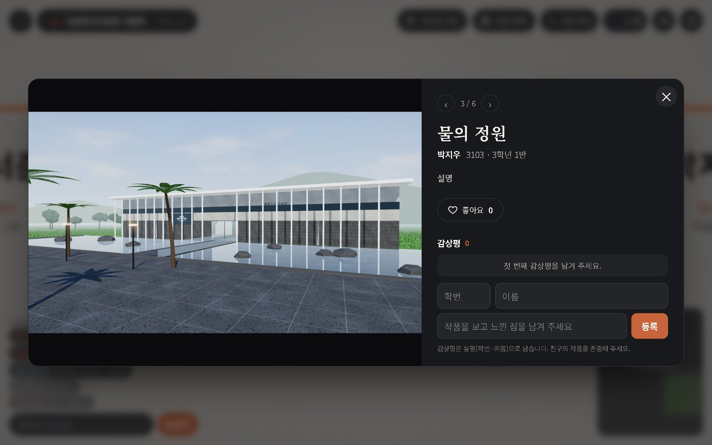
- 작품이 크게 보이고 제목·설명이 나옵니다.
- 좋아요와 감상평을 남길 수 있습니다. 감상평은 학번·이름을 적어야 하고, 나쁜 말은 걸러집니다.
- 감상평은 기본적으로 쓴 기기에만 남습니다. 한곳에 모으려면 오른쪽 방법을 씁니다.
관리 메뉴 — 키보드 F9
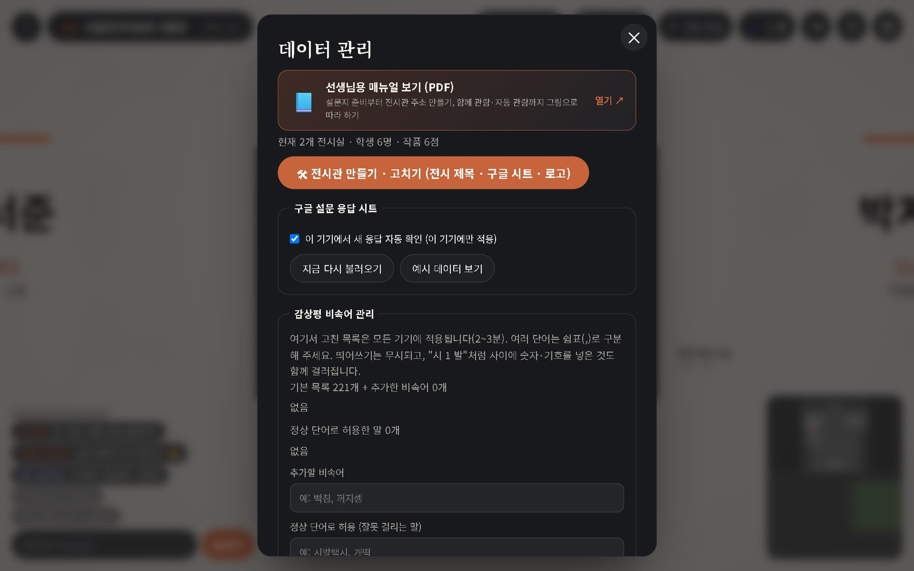
- 전시관 만들기 · 고치기 — 만들기 화면을 다시 엽니다.
- 지금 다시 불러오기 — 새 작품을 바로 확인합니다.
- 감상평 — 구글 시트에 모으는 방법 안내, 이 기기의 감상평 내려받기.
- 인터넷이 막혀 있을 때 — 시트 내용을 붙여넣어 전시.
감상평을 구글 시트 한곳에 모으려면 (선택)
- F9 → 감상평 → 웹 앱 주소 만드는 방법을 펼쳐 순서대로 따라 합니다. (약 5분)
- 만들어진 주소(https://script.google.com/…/exec)를 복사합니다.
- 만들기 화면 ③의 더 꾸미기를 펼쳐 붙여넣고, 전시관 주소를 새로 만들어 다시 알립니다.
학교 로고 넣기 (선택)
로고 그림을 구글 드라이브에 올리고 "링크가 있는 모든 사용자"로 공유한 뒤, 그 주소를 만들기 화면 ③ 더 꾸미기의 학교 로고 칸에 붙여넣고 주소를 새로 만듭니다.
꼭 지킬 것 — 개인정보
- 전시관 주소를 아는 사람은 학생 이름·학번·작품을 볼 수 있습니다. 학교의 개인정보·초상권 동의 절차를 따르세요.
- 구글 시트 전체가 "링크가 있는 사용자"에게 보입니다. 전화번호 같은 다른 정보를 그 시트에 적지 마세요.
- 학생 얼굴이 나온 사진은 올리지 않도록 안내합니다.
- 함께 관람·대화는 주소를 아는 누구나 들어올 수 있습니다. 주소를 학교 밖에 공개할 때는 대화를 꺼 두기를 권합니다.
- 로비에 걸린 큰 그림들은 전시관을 꾸미기 위해 새로 만든 그림이며, 실제 작가의 작품이 아닙니다.
한 장 체크리스트
- 구글에 로그인하고 만들기 화면을 열었다.
- 설문지 사본을 만들고 제목을 고쳤다. (질문 순서는 그대로)
- 응답 → Sheets에 연결 → 구글 시트를 만들었다.
- 구글 시트를 "링크가 있는 모든 사용자 · 뷰어"로 공유했다.
- 사진 폴더 (File responses)를 "링크가 있는 모든 사용자 · 뷰어"로 공유했다.
- 시트 주소를 붙여넣고 ✅ 연결되었습니다를 확인했다.
- 전시 제목·학교 이름을 적고, 함께 관람·대화 여부를 정했다.
- 전시관 주소를 만들어 복사해 두고, QR 코드를 저장했다.
- 시험 제출을 해서 전시관에 걸리는 것을 확인하고, 시험 줄을 지웠다.
- 학생에게 설문지 링크와 전시관 주소를 알렸다.
- (전시 후) 응답 받기를 끄고, 시트·폴더 공유를 "제한됨"으로 되돌렸다.
더 필요한 분께: 학생이 수백 명이거나 학교 전용 주소가 필요하면 저장소의 docs/고급-설치-Vercel.md(예전 매뉴얼: manual/teacher-manual-advanced.pdf)를 보세요.